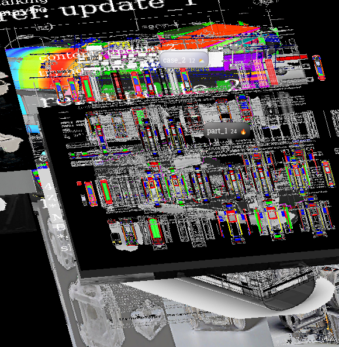
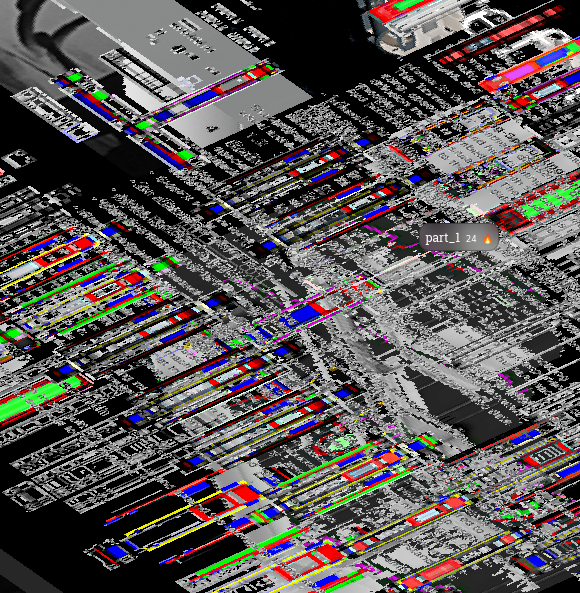

archive detail 1

archive detail 2

archive detail 3
INDA 2024
Joris Putteneers & Deniz Güvendi
Keywords: #hacking #tracking #tracing #scraping #sensing #AI #synthetic #IoT #architecture #augmentation #compression #surveillance #scripting #algorithms
In technology, architecture, or electronics, the "master/slave" protocol is used to describe an asymmetric relationship between primary and secondary devices or components of a system. This relationship is most often dependent on the amount of control or computation embedded in a system. In a linked configuration, whenever a device has significantly more compute or control than its counterparts, it is considered to be the 'Master,' and if the roles are reversed, we call it a 'Slave.' A clear reference to this relationship used to be prominent within the AI-human discourse, but in recent years, this border has become more vague, cryptic, and obscure. We are learning that machines can work better and faster, not when we subject them to our own modus operandi, but when we let them follow a different, nonhuman, black box protocol. We increasingly find it easier to let computers solve problems in their own way - even when we do not understand what they do or how they do it.
This workshop explores the intricacies of the physical manifestation of this protocol, exploring the changing dynamics of control within architecture and technology. Let's switch roles, let go of control, embrace the unknown, and speculate the simulacrum!
Students will exercise this exploration in the built environment in and around the university, taking sites from different scales and using them as subjects for our projects.
The project will unfold in 2 phases.
Collecting, scraping, capturing, and generating (synthetic) data from the site. This is primarily accomplished through sensor data from encased microcontrollers. The result visualizes hidden layers of information, such as temperature, humidity, gases, sound, WiFi, Bluetooth, population, and trajectories, all as volumetric 3D heatmaps. Additionally, scraping tools, photogrammetry techniques, 360 videos, drone footage, metadata-mapped images, and synthetic data can also be deployed.
The ’homegrown’ synthetic dataset will be used in a multi-dimensional machine learning model, speculating and hallucinating architectural elements that critically act in response to corresponding inputs. The model is embedded with sensorial information and can now begin generating ’conditioned’ models for different situations, analyzing and mapping the 3D model, and exploiting its thresholds and boundaries. The ’conditioned’ model can be augmented back on the physical site, seeing the relationship and unlocking the potential spatial opportunities. Various fabrication techniques can be used to build said physical models.
Students are expected to upload a progress model/image/screenshot/text every day to our visual archive as a means of capturing the amount of work that has been done.
archive detail 1
archive detail 2
archive detail 3
A combination of:
All techniques will have detailed documentation, and students are not required to have prior knowledge of the above-mentioned tools.
Joris Putteneers is an architect, software developer, and researcher, interested in speculating the anthroposcene through means of software, hardware, and media technologies. His work has been exhibited at MoMA New York, London Design Festival, Venice Biennale, and multiple film festivals. He has taught internationally at the Bartlett UCL, Texas AM, MIT, KUL Faculty of Architecture, and TU Wien. website.
Deniz Güvendi studied architecture in Istanbul, Krakow, and Ghent, holding an MSc.Architecture degree specializing in sustainable development from KU Leuven. She brings experience from diverse architecture projects, with a strong focus on adaptability, circularity, and nature-human-machine cooperation. behance.
Currently, Deniz and Joris are working on an infrastructure stack that is used to inform architecture design decisions through analyzing and visualizing the hidden layers of the built environment.
| Date | Details |
|---|---|
Day 1: Thursday, 4 Jan |
1.0. Collecting-Sorting-Generating (Slave) |
| 09:00 – 12:00 | Workshop Presentation (10 mins/group) |
| 12:00 – 13:00 | Lunchbreak. |
| 13:00 – 15:00 | Site trip, course introduction, project showcase. |
| 15:00 – 17:00 | Worksession: Software help, extracting and visualizing site trip data + group discussion + making groups. |
| 17:00 - 18:30 | Archiving: Upload to the website + Sharing is caring. |
Day 2: Friday, 5 Jan |
1.1. Collecting-Sorting-Generating (Slave) |
| 09:00 – 12:00 | Workshop: Programming/soldering microcontrollers, adding sensors, sending and retrieving data. |
| 12:00 – 13:00 | Lunchbreak. |
| 13:00 – 14:00 | Workshop: Houdini introduction, visualizing the data. |
| 14:00 – 18:00 | Worksession in groups: Project discussions and site proposals. |
| 18:00 - 18:30 | Archiving: Upload to the website + Sharing is caring. |
Day 3: Saturday, 6 Jan |
1.2. Collecting-Sorting-Generating (Slave) |
| 09:00 – 12:00 | Workshop: Mapping techniques: drone-photogrammetry-gaussian splatting - extrapolating camera paths + rendering an animation. |
| 12:00 – 13:00 | Lunchbreak. |
| 13:00 – 18:00 | Worksession in groups: Mapping the site through sensordata and photogrammetry. |
| 18:00 - 18:30 | Archiving: Upload to the website + Sharing is caring. |
Day 4: Sunday, 7 Jan |
1.3. Collecting-Sorting-Generating (Slave) |
| 09:00 – 15:30 | Worksession in groups: Capturing/mapping data on site. |
| 15:30 – 17:00 | Preliminary project proposals. |
| 17:00 - 17:30 | Archiving: upload to the website + Sharing is caring. |
| 18:30 – 18:30 | >project showcase |
Day 5: Monday, 8 Jan |
2.0. Speculating-Augmenting-Making (Master) |
| 09:00 – 13:00 | Worksession in groups > Ongoing work of collecting data. |
| 13:00 – 18:00 | Workshop3rd: Extracting and visualizing datasets, producing synthetic datasets. |
| 18:00 - 18:30 | Archiving: upload to the website + Sharing is caring. |
Day 6: Tuesday, 9 Jan |
2.1. Speculating-Augmenting-Making (Master) |
| 09:00 – 14:00 | Worksession in groups> Ongoing production of in-house synthetic data. |
| 14:00 – 18:00 | Workshop4th: Training our Machine learning model and generating synthetic output. |
| 18:00 - 18:30 | Archiving: upload to the website + Sharing is caring. |
Day 7: Wednesday, 10 Jan |
2.2. Speculating-Augmenting-Making (Master) |
| 09:00 – 17:00 | Worksession in groups> |
| 17:00 - 17:30 | Archiving: upload to the website + Sharing is caring. |
| 17:30 – 18:30 | >Project showcase |
Day 8: Thursday, 11 Jan |
2.3. Speculating-Augmenting-Making (Master) |
| 09:00 – 18:00 | Worksession in groups> |
| 18:00 - 18:30 | Archiving: upload to the website + Sharing is caring. |
Day 9: Friday, 12 Jan |
2.4. Speculating-Augmenting-Making (Master) |
| 09:00 – 18:00 | Worksession in groups + Exhibition Preparation> |
| 18:00 - 18:30 | Archiving: upload to the website + Sharing is caring. |
Day 10: Saturday, 13 Jan |
2.5. Speculating-Augmenting-Making (Master) |
| 09:00 – 16:00 | Exhibition Preparation |
| 16:00 – 19:00 | >Exhibition |